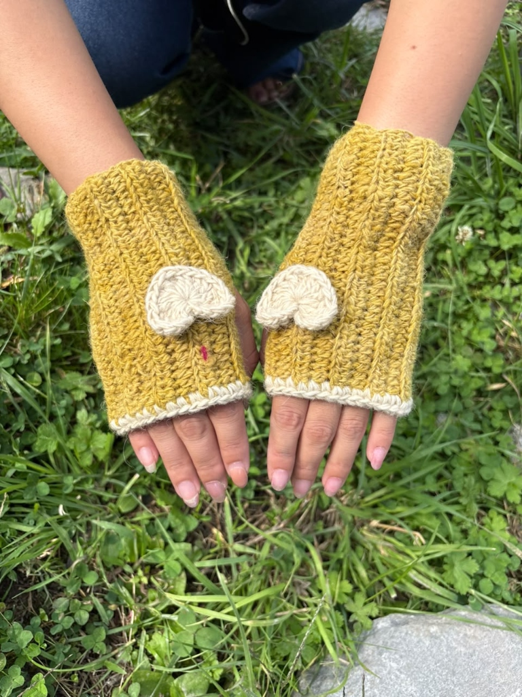
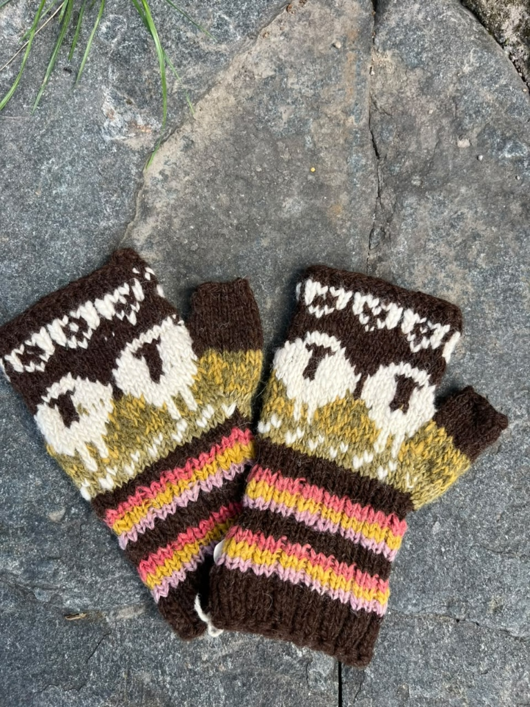

From raw to ready
One product,
One product,
every step of it.
📍 Origin: Lahaul & Kinnaur Valley, Himachal Pradesh
•
31.6510° N, 78.4754° E
•
Elev: 2,750m ASL
•
GI Tag Registered
01
Origin
Dense, resilient mountain wool gathered from pastoral flocks navigating the windswept passes of upper Kinnaur and Lahaul.
Scroll REC
00:00:12:08
Landscape video · 16:9
REC
00:00:12:08
Landscape video · 16:9
01Source site
 Photo · 4:5
Photo · 4:5
02Gathering
 Photo · 4:5
Photo · 4:5
03Sorting
 Photo · 4:5
Photo · 4:5
04Transport
02
Craft
Hand-spun into flexible 3-ply yarn, kettle-dyed with mountain marigold and madder, and knitted into comfortable fingerless mittens with handcrafted motifs.
Scroll REC
00:00:12:08
Landscape video · 16:9
REC
00:00:12:08
Landscape video · 16:9
01Preparation
 Photo · 4:5
Photo · 4:5
02Shaping
 Photo · 4:5
Photo · 4:5
03Assembly
 Photo · 4:5
Photo · 4:5
04Detailing
 Photo · 4:5
Photo · 4:5
05Inspection
03
Finished product
The completed Himachali Handcrafted Gloves — warm, tactile, and engineered for mountain living and agile hand movement.
Scroll
REC 00:00:12:08 Showcase Film · 16:901Final reveal

Photo · 4:502Polish
Photo · 4:5
03Packaging
Digital Provenance Geo-Tag
Authentic Kinnauri Handcraft
Each pair is individually knitted by mountain artisans in Lahaul & Kinnaur using heritage motifs passed through generations of oral needlework traditions.
Geographic Origin
Lahaul & Kinnaur Valley, Himachal Pradesh, India
GPS Coordinates
31.6510° N, 78.4754° E (2,750m)
Fiber & Material
100% Himalayan Mountain Fleece & Natural Cotton Trims
Coloration
Undyed Natural Sheep Wool + Wild Marigold & Turmeric Solar Bath
Artisan Guild
Kinnaur Mountain Craft & Needlework Guild
Traceability Tag ID
HP-LH-GLV-2026-042

Scan with your smartphone camera to access this product lifecycle anywhere.